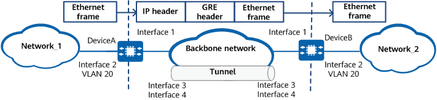

Understanding EoGRE
Fundamentals
On the network shown in Figure 1, Network_1 and Network_2 are both Ethernet networks and are connected through an IP/MPLS backbone network. To allow the two networks to communicate at Layer 2, deploy Ethernet over GRE (EoGRE) so that Ethernet packets can be transparently transmitted through GRE tunnels.
Figure 1 EoGRE networking
In this example, interface 1, interface 2, interface 3 and interface 4 represent 10GE 0/0/1, 10GE 0/0/2, Tunnel 1, and Virtual-Ethernet 0/0/1, respectively.

EoGRE encapsulates Ethernet packets using GRE and transmits the encapsulated packets over a network running another network layer protocol, such as IPv4. The detailed working process is as follows:
- The user-side physical Ethernet interface 10GE 0/0/2 on DeviceA receives an Ethernet packet carrying VLAN tag information from Network_1.
- After receiving the Ethernet packet from 10GE 0/0/2, DeviceA forwards the packet at Layer 2 based on the MAC address and VLAN information through the corresponding outbound interface Virtual-Ethernet 0/0/1.
- Virtual-Ethernet 0/0/1 on DeviceA processes the Ethernet packet and forwards it to Tunnel1 bound to Virtual-Ethernet 0/0/1. Tunnel1 encapsulates the packet using GRE (with the protocol code of 0x6558) and forwards the encapsulated packet to DeviceB over a GRE tunnel.
- Tunnel1 on DeviceB performs GRE decapsulation on the received packet. After finding that the protocol code is 0x6558, Tunnel1 forwards the packet to Virtual-Ethernet 0/0/1 bound to itself.
- After receiving the decapsulated Ethernet packet, DeviceB's Virtual-Ethernet 0/0/1 forwards the packet at Layer 2 based on the MAC address and VLAN information through the corresponding outbound interface 10GE 0/0/2.
- DeviceB sends the Ethernet packet to Network_2 through the outbound interface 10GE 0/0/2.